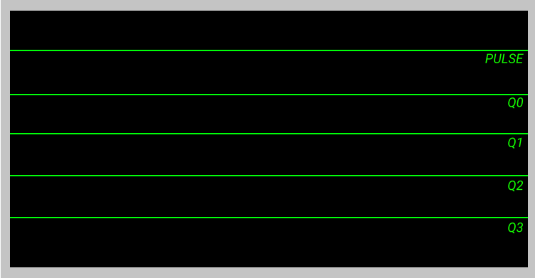
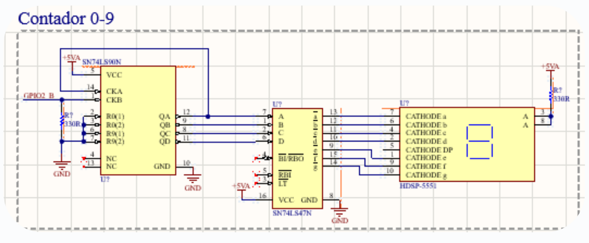

Stream Camera Raspbery PI
Javascript
Display the stream with javascript
Hints
This example shows the stream by using java script. It works with most browsers. To see a simple example click here.
© The MJPG-streamer team | Design by Andreas Viklund

